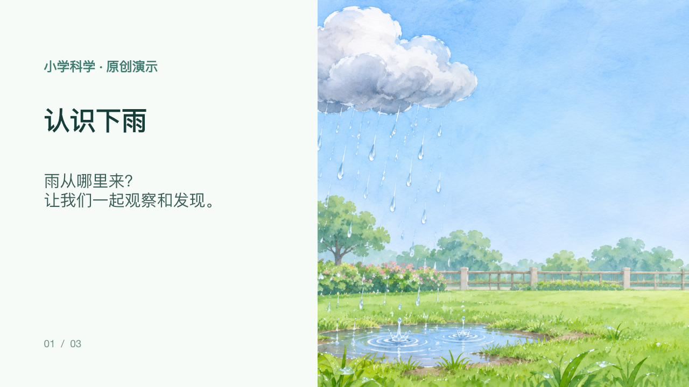
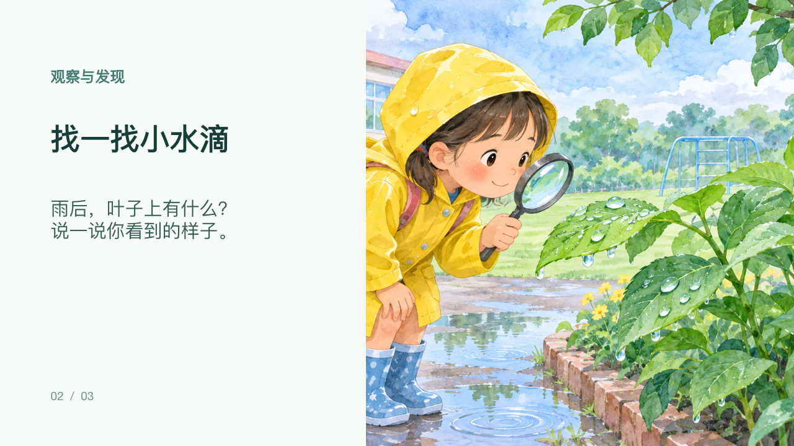
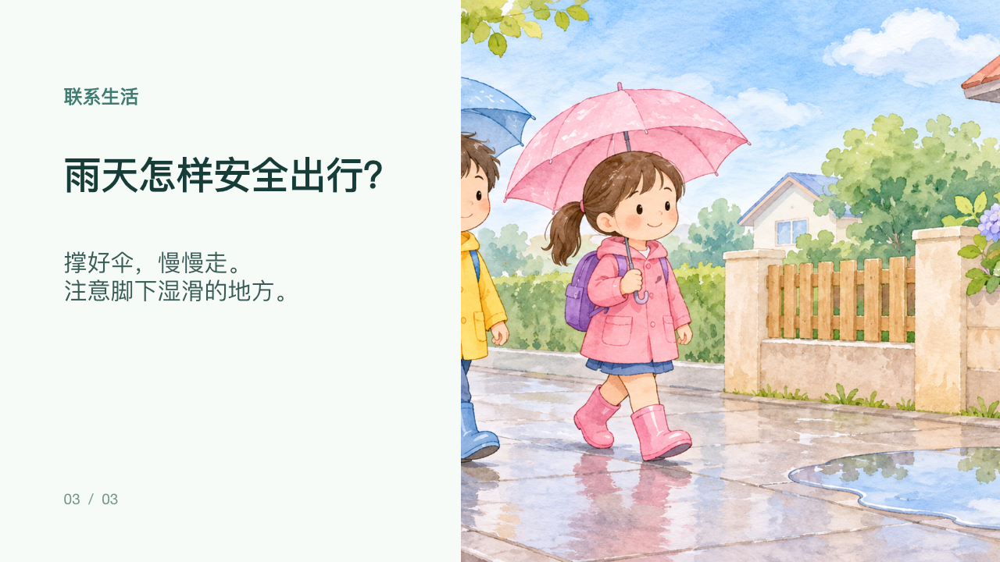

给孩子做一份课件
准备手机和可用的 AI 工具，先给自己或孩子做一节课。工具额度和费用以实际说明为准。
本站实操 · 虚构教学示例
试做一份《认识下雨》课件
这是小学科学的三页示例。我们先用 Kimi K3.1 Pro 生成教案和课件构想，再用内置 AI 图像生成工具制作插画，最后用本地演示文稿工具重新组织并制作可编辑文字的 PPTX。

第 1 页 · 认识下雨
第 2 页 · 观察小水滴
第 3 页 · 雨天出行
以上是实际制作并渲染检查的三页；最终排版和 Kimi 最初的课件构想并不完全相同。我们把 PPTX 用本机 LibreOffice Impress 打开并导出 PDF，三页重新检查后文字和图片均可见。你也可以在电脑上打开示例课件，选择“导出为 PDF”；不同版本菜单可能不同。
这是原创虚构的教学演示，正式授课前需由老师核对科学内容和安全要求。本机 LibreOffice 初次导出时中文未显示，设置可用的中文字体目录后恢复；其他电脑仍需检查字体。我们尚未在 WPS 或 PowerPoint 中打开该文件，也没有验证 WPS 导出；不同软件中的显示可能不同。
下载三页 PPTX 示例（约 8 MB） 查看实测导出的 PDF（约 1.3 MB）下面每一句提示词都会自动填上这节课。不知道选什么，就用孩子正在学的那一课。
完成教程后，可到 AI 工具中生成教案和课件。想整理一套课件助手提示词，可以继续做站内选择练习。
圈友是怎么做的
以下整理自圈友的个人复盘，呈现做法与经验，不代表普遍结果。
一位圈友从女儿学习的三年级语文课件入手，逐步整理出教案、大纲和逐字稿的制作流程。
了解来源 ›一位圈友长期帮幼师姐姐和同事整理教案与课件，从中了解老师的需要，并建议按主题整理资料。
了解来源 ›一位做虚拟资料的圈友会查看同类产品差评与评论区追问，寻找可以改进的地方。
了解来源 ›一位作者自述曾在逐元素编辑 PPT 上花费较多时间；其团队部分店铺还曾因侵权或平台规则问题受到影响。
了解来源 ›各人情况不同；发布或销售前请自行核对素材授权与平台规则。
开始前先想清楚
以下是制作课件时可以参考的思路。
先选一节自己熟悉的课，梳理教学目标、教案、大纲和讲解稿。
与老师或家长交流，确认他们真正需要什么，再决定制作内容。
先让目标使用者试用，收集反馈并调整，再考虑是否整理成合集。
核对素材授权、文字准确性和演示效果，不要搬运他人的课件。
以上是参考思路，实际结果因人而异。
要花多少
| 自己用、给孩子用 | 取决于所用工具和素材 |
| AI 写作与生图 | 费用及额度以工具当期说明为准 |
| WPS 把 PDF 转成 PPT | 部分功能要会员 |
| 想拿去卖：平台费用 | 以平台当期规则为准 |
| 想拿去卖：时间 | 每份课件几个小时，前几周可能没单 |
符合条件的话，也可以先用小红书的个人售卖试一试，以平台当时的规则为准。
下一步
- 先自己用。用练习成果助手给自己或身边的老师做 2 份，看用起来顺不顺手。
- 想拿去卖，先算成本。保证金、会员、时间都算进去，再翻同行的差评区找需求。
- 想有人带着做完。生财有术的航海里有「小红书虚拟产品」这类船，课件是其中一种做法。每期开哪些船不固定，报名条件、费用及退款规则以当期报名页为准。
页面里的示意图不是真实软件界面。示例图片由 AI 生成。